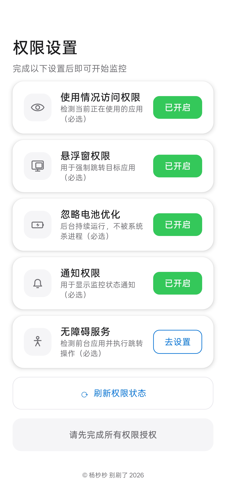
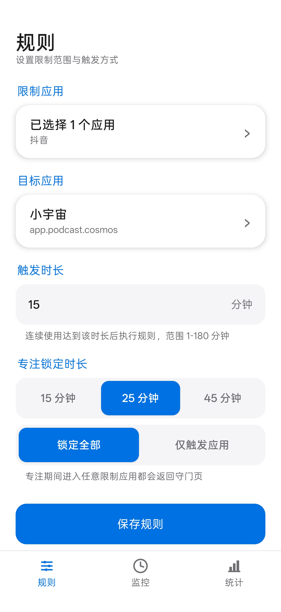
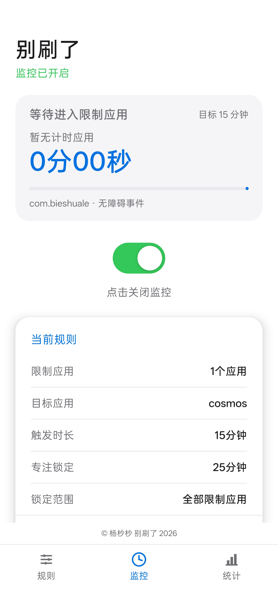
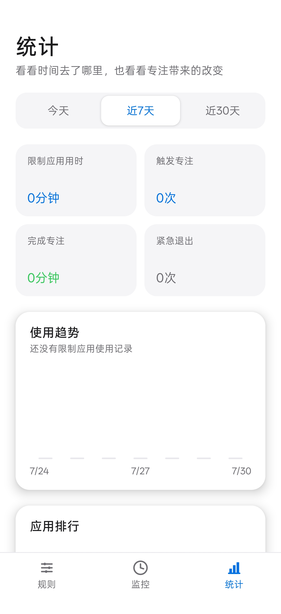

应用使用计时
分别累计每个限制应用的使用时间离开应用后自动暂停再次进入时继续累计




分别累计每个限制应用的使用时间离开应用后自动暂停再次进入时继续累计
达到设定时长后进入守门页自动打开选择的目标应用把下一步行动放到眼前
专注期间反复阻止返回限制应用支持锁定全部限制应用也能只锁定本次触发应用
无需网络权限规则和计时状态仅保存在本机不读取聊天 密码或私人内容
监控开启后自动开始计时离开应用时暂停不同限制应用分别累计
触发时长可设置为 1 至 180 分钟到点后进入专注守门页系统自动打开目标应用
可选择 15 25 或 45 分钟尝试返回限制应用时再次拦截目标应用始终可以正常使用
倒计时结束后自动解除限制下一次进入限制应用重新计时紧急退出需要填写具体原因
按提示开启五项必要权限每项都显示已开启才算完成Android 10 及以上版本可用
选择一个或多个限制应用选择一个学习或工作目标应用设置触发时长与专注锁定时长
打开主页中央的监控开关确认顶部显示监控已开启达到时限后按计划进入目标应用
当前版本没有声明网络权限不会上传规则 使用记录或专注任务清除应用数据或卸载会删除本地记录
无障碍服务用于识别前台应用不会读取聊天内容 密码或私人文件请从可信来源安装并理解权限用途
确实有急事时可以紧急退出需要填写至少两个字的退出原因让退出成为一次主动决定
建议先设置 10 至 15 分钟触发第一次选择 15 分钟专注坚持几天后再逐步增加强度
确认主页显示监控已开启确认应用已经加入限制列表重新检查使用情况访问和无障碍服务
检查悬浮窗和无障碍服务允许软件后台弹出界面和自启动先打开一次目标应用再重新监控
这是安卓后台持续运行的正常要求保留通知有助于系统稳定计时关闭监控后通知会自动消失
把手机品牌 系统版本和问题描述发给我我会根据你的使用情况继续排查
联系我